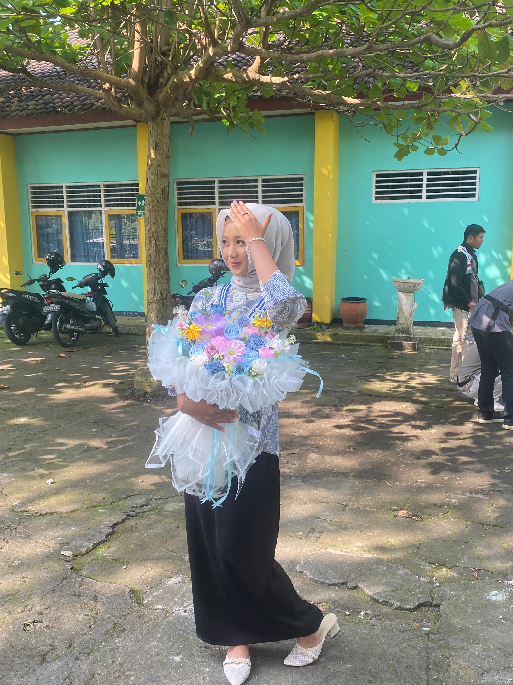

👋 Halo, selamat datang!
Seorang pelajar yang sedang belajar di bidang Pengembangan Perangkat Lunak dan Gim (PPLG). Saya tertarik dengan coding, kreativitas, dan hal-hal baru di dunia digital.

Tentang Saya
Halo! Saya Salwa Irly Daniya, siswi kelas X PPLG-1. Saya sedang mempelajari berbagai hal tentang teknologi dan pemrograman.
Saya tertarik untuk mengembangkan kemampuan coding, terutama dalam membuat website menggunakan HTML dan CSS. Selain belajar teknologi, saya juga suka melakukan kegiatan yang berhubungan dengan kreativitas.
Saya berharap dapat terus belajar, mencoba hal baru, dan mengembangkan kemampuan saya selama belajar di PPLG.
Yang Sedang Saya Pelajari
Mempelajari cara membuat struktur dasar sebuah website menggunakan HTML.
Mempelajari cara membuat tampilan website menjadi lebih rapi dan menarik.
Mengembangkan ide kreatif melalui kegiatan membuat buket dan berbagai karya.
Menyanyi menjadi salah satu hobi yang saya sukai dan terus saya kembangkan.
Karya & Kegiatan
Membuat website pribadi sebagai tugas pembelajaran HTML dan CSS di jurusan PPLG.
Membuat dan mengembangkan usaha buket dengan nama irlysscraft.id.
Mempelajari dasar-dasar pemrograman, HTML, CSS, dan teknologi lainnya.
Terima kasih sudah mengunjungi website saya. Jika ingin menghubungi saya, silakan klik tombol di bawah ini.